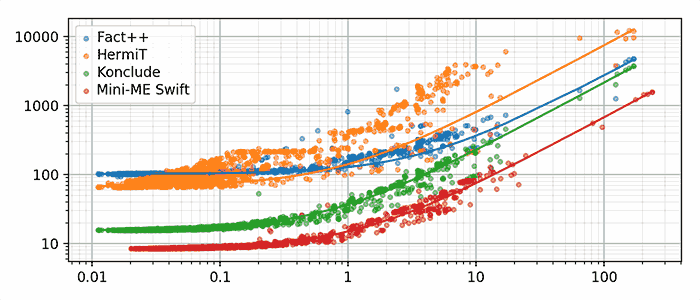

I've worked on quite a bit of stuff throughout the years. This is a curated selection of some of the projects I enjoyed the most. Many of them are open source.
iCleaner
The popular system cleaner for jailbroken iOS.
iOS
BeFree
Indoor navigation iOS app focusing on accessibility.
iOS
FacePy
A Python framework for facial detection and recognition.
Open Source
Mini-ME Swift
The first automated OWL reasoner for the iOS platform.
iOS
Research
Cowl
A lightweight C API for working with OWL ontologies.
Research
Open Source

evOWLuator
A cross-platform, energy-aware evaluation tool for OWL reasoners.
Research
Open Source
uLib
A modern, type-safe, generic library for the C language.
Open Source
uVec
A type-safe, generic C vector. Part of the uLib library.
Open Source
uHash
A type-safe, generic C hash table. Part of the uLib library.
Open Source
ICTextView
Extending the native iOS text view with search functionality.
iOS
Open Source
FaceAuth
Client-server user authentication with facial recognition.
iOS
Open Source
Adaptive Video Player
HLS stream video player for iOS with manual quality selection.
iOS
Open Source
OWL API for iOS
A native iOS API for working with OWL ontologies.
iOS
Research
Open Source
UMLens
Automated UML analysis for software quality estimation.